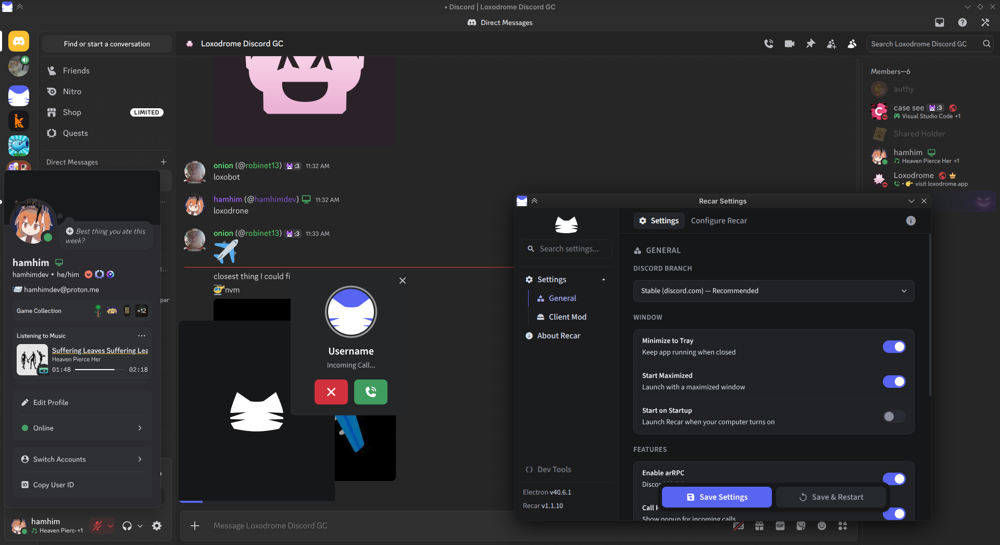

/ˈriiːkɑr/
The Linux-first Discord client. Recar offers a snappier experience, Vencord and Equicord support, and many quality of life features. If you've used Discord on Windows, you should feel right at home.
